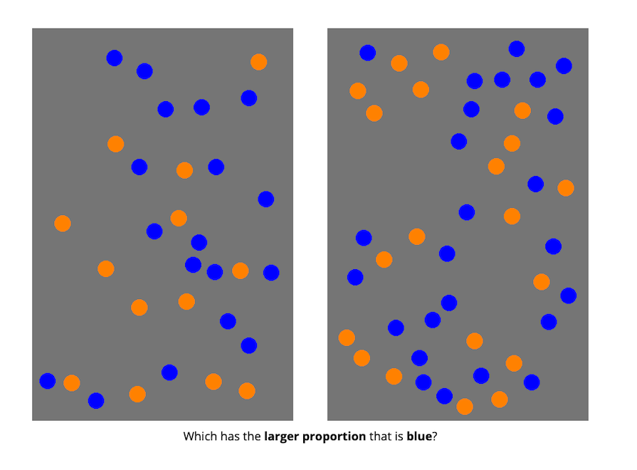
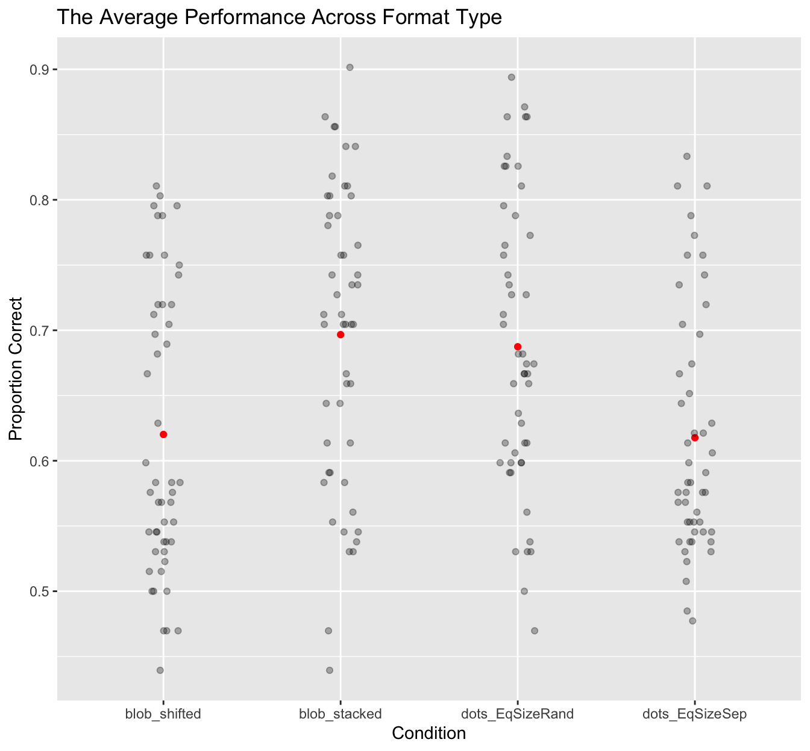
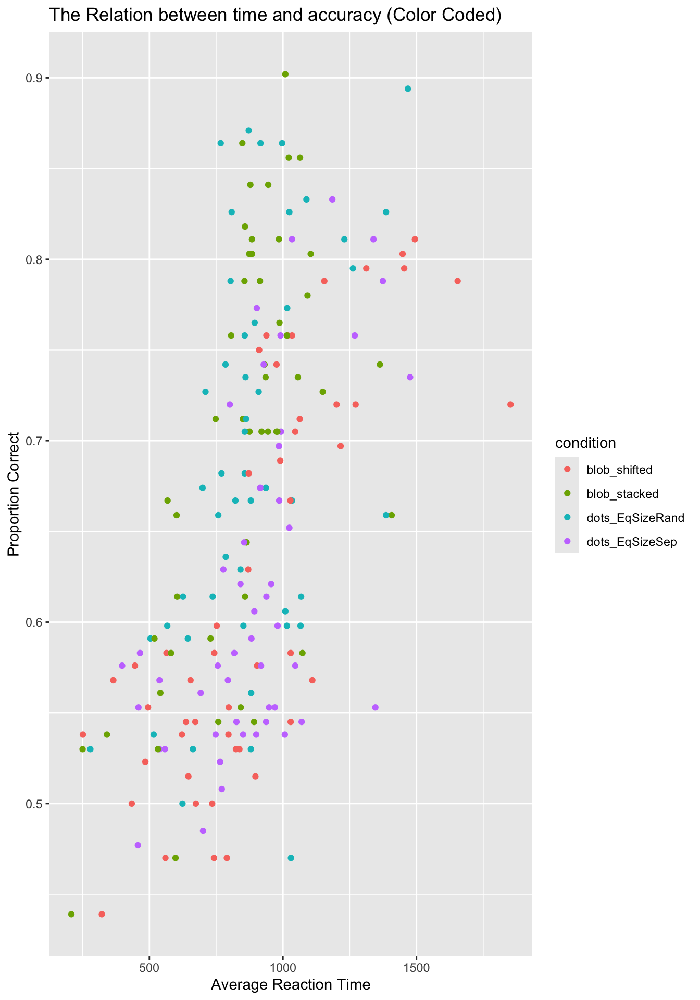
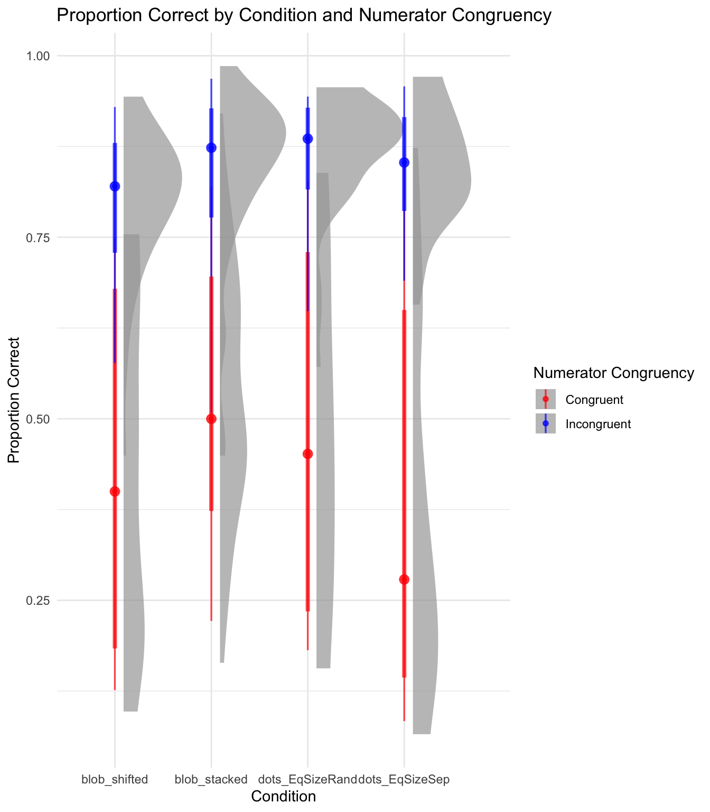

Proportional reasoning aross formats
Jennifer Curi 1
1 Rutgers University
Introduction
Comparing proportions is sometimes very hard! But, even infants seem to be able to do it a little bit. The purpose of this science project was better understand how well people compare proportions when the proportions are presented in different formats. The purpose of this class assignment is to take the R-code and plots we’ve been generation over the last several weeks and put it all together into poster formal.
Research Objectives
- Does average performance vary across format type?
- Does average performance vary across numerator congruency status?
- Does numerator congruency vary across format type? (i.e., is there an interaction)
Participants
A total of 99 adults participated in the study.
Methods
First, participants were introduced to a story about a magic ball and that the outcome (i.e, blue or orange) depended on the proportions. They were then asked to compare the proportions of different images.
In other words, participants were shown two images of the same kind at the same time and asked to decide which had a higher proportion of the shape (or dots) colored in blue.

Conditions
There were four different conditions that changed what kinds of images the participants saw:
• divided blobs: blue and orange were entirely separate
• integrated blob: one blob, divided to be part blue and part orange
• separated dots: blue and orange dots were on opposite sides of the image
• integrated dots: blue and orange dots were intermixed

Results
- Does average performance vary across format type, ignoring all other aspects of the stimuli?

Figure 1: The plot shows the average performance for each condition with red dots, while grey dots show how individual responses are distributed around these averages. The average accuracy (proportion correct), varies slightly across different format conditions
- How are reaction time and accuracy related?

Figure 2: The plot shows that people tend to be more accurate when they take longer to respond, with different colors showing the results for each condition.
- How does numerator congruency interact with format type?

Figure 3: The plot shows that people tend to be less accurate on congruent trials (red) compared to incongruent trials (blue), and the performance varies across different conditions.
Interpretation
Average Performance across format type: The red dots show the average performance for each condition, while the grey dots show how individual responses vary. Some conditions have responses that are close to the average, while others show more spread, meaning participants’ performance was less consistent.
The Correlation between reaction time and accuracy: This plot shows that people are usually more accurate when they take longer to respond. The different colors represent different conditions, and while the trend generally shows better accuracy with more time, there is still some variation between the conditions.
How numerator congruency interacts with format types: The plot compares performance on red (congruent) and blue (incongruent) trials. People tend to be less accurate on red trials compared to blue ones. The shaded areas show how much responses vary within each condition, with some conditions showing more spread than others.
Conclusion
The tedious part of the assignment was dealing with the formatting and getting everything to look right on the poster. It took a lot of time to make sure each section was in the correct place and that the plots were accurate and displayed clearly. Because this was a new file, I had to re-summarize the prodtask data set and then graph it, which introduced some errors.
The most satisfying part was having a template to guide me, so I didn’t have to start from 0. It saved me time and made it easier to focus on putting the content together. It also felt great to see all my work come together in the end. Seeing the finished poster with everything in place was rewarding and gave me a sense of accomplishment.